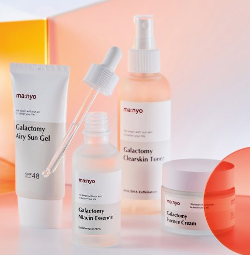

Home
man:yo

Responsive Website Renewal
MEDIAQUERY
PC : 1903px - 1025px
Mobile : max 414px
WORK
UI/UX 디자인, 퍼블리싱
WORK TIME
2019.12.04 - 2019.12.15
TYPE
웹&모바일
STYLE GUIDE
Typography
Color
CONCEPT
‘좋은 성분은 피부를 속이지 않는다’는
슬로건 아래 자연 유래 천연성분으로 고기능성 화장품을
만들어 온 뷰티 브랜드의 이미지에 맞는
자연 유래의 무해한 느낌을 주는 컬러를 선정하여
브랜드의 신뢰를 높이는데 초점을 두어 작업하였습니다.
click click
going to site